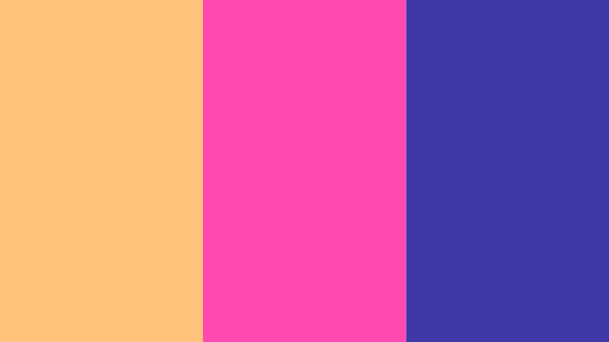

The Chosen Colours were these three colours. Each of them represents a different
feeling. Not listed in any order, these colours represent Nostalgia, Happiness, and Love.
The Colour Flowchart involved playing around with these colours in order to see which colours flowed
into others better.
The Shape Experiments involved the artist creating a whole catalogue of shapes
to play around with, subsequently populating each one of them with each colour. Doing so enabled the artist to semantically
assign each colour to a shape that he desired.
The Test with Magic Music Visuals was done to test just what the software could do. The output from
the test was not as desirable as the artist envisioned, so he decided to scrap the idea and utilise
another software.

The After Effects Incorporation was a period of enlightenment. This was where the artist managed to
create the work with effective results. Using compositing witin After Effects, the chosen colours were able to
ebb and flow according to what he had envisioned.

The GarageBand Implementation involved getting visuals to work with the visuals created within After
Effects. Careful consideration was carried out when deciding on what instruments to use to accompany
those visuals. GarageBand was ultimately used to allow the artist play the accompanying audio according to the video.

The GarageBand Plugin called "LABS by Spitfire Audio" was utilised within the tracks created. Auditory
attributes such as reverb and sustain was edited using this plugin. The result was a piece of work
that allowed resonance to occur within viewers.